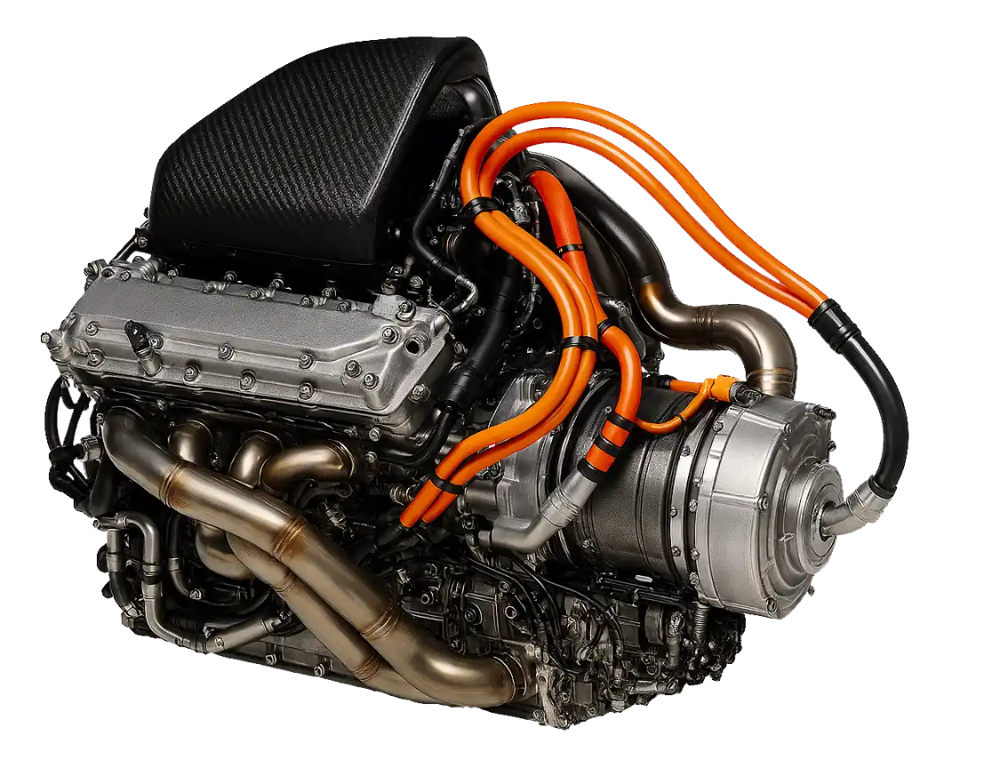
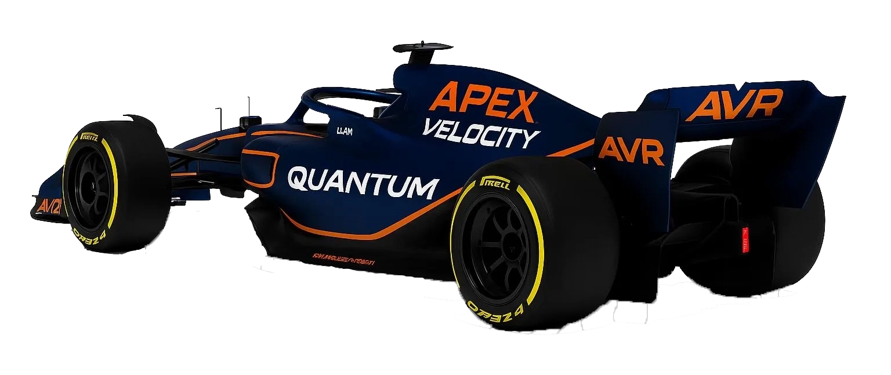

Car & Tech
Explore the engineering excellence behind Apex Velocity Racing

Engine Specifications
- Type: 1.6L V6 Turbo Hybrid
- Power Output: 1000+ HP
- RPM Limit: 15,000
- ERS Deployment: 160 HP boost
- Fuel Efficiency: 35% thermal efficiency
Performance Metrics
- 0–100 km/h: 2.5 seconds
- Top Speed: 360 km/h
- Downforce: 5,000 N at 250 km/h
- Weight: 798 kg (including driver)
- Braking Distance: 100–0 km/h in 2.8 seconds

Chassis & Aerodynamics
Constructed from carbon fiber composites, the AVR chassis balances rigidity with lightweight efficiency. The aerodynamic package includes a multi‑element front wing, sculpted sidepods, and a high‑downforce rear wing designed for maximum cornering grip.
Technology & Innovation
The car integrates advanced telemetry systems, hybrid energy recovery, and adaptive suspension. Real‑time data streams allow engineers to fine‑tune performance during races, while the hybrid system ensures both speed and sustainability.